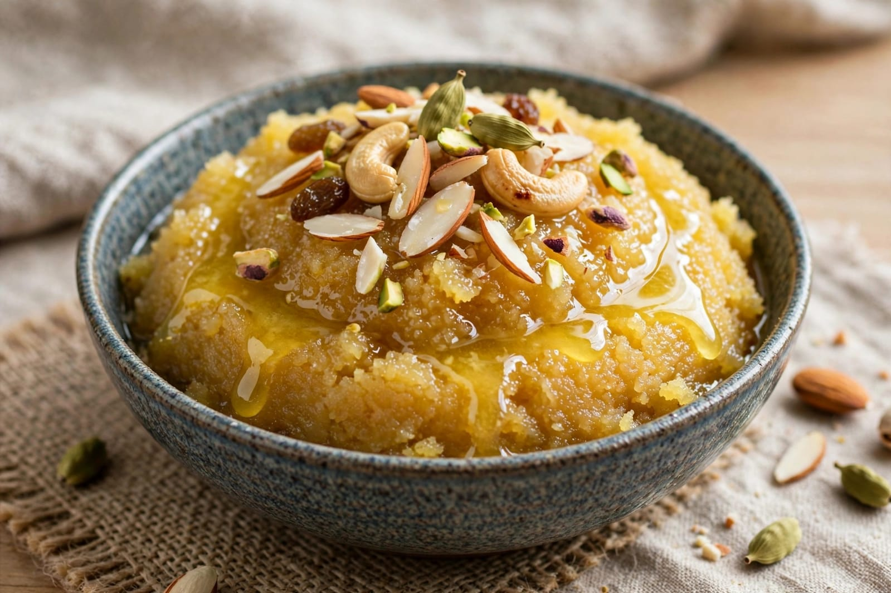
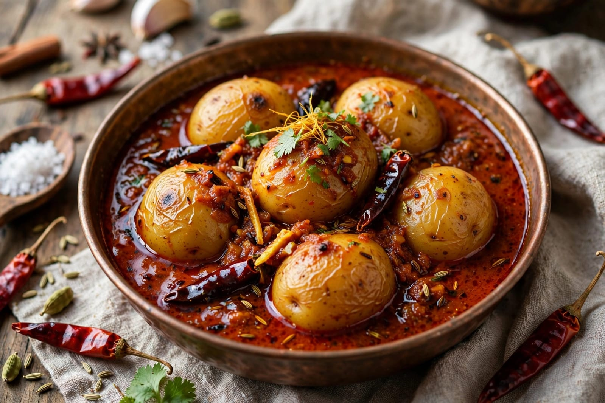

About Karva Chauth
Karva Chauth is a traditional Hindu festival mainly observed by married women in parts of India. It is celebrated on the fourth day after the full moon during the Hindu month of Kartika. On this day, women traditionally observe a fast and pray for the well-being, long life and prosperity of their husbands.
Women dress in traditional clothes and wear jewellery, bangles and mehendi for the celebration. They gather with family and friends and participate in prayers and the Karva Chauth rituals. The festival is also associated with family bonding, traditions and cultural celebrations.
In the evening, the moon is traditionally worshipped as part of the ceremony. After the religious rituals, the fast is traditionally concluded. Karva Chauth is especially associated with North Indian culture and is celebrated with different customs in different regions.
Special Foods

Halwa
A sweet dish commonly prepared for festive occasions.

Kheer
A traditional sweet made with milk, rice and sugar.

Aloo Sabzi
A traditional potato dish served as part of festive meals.